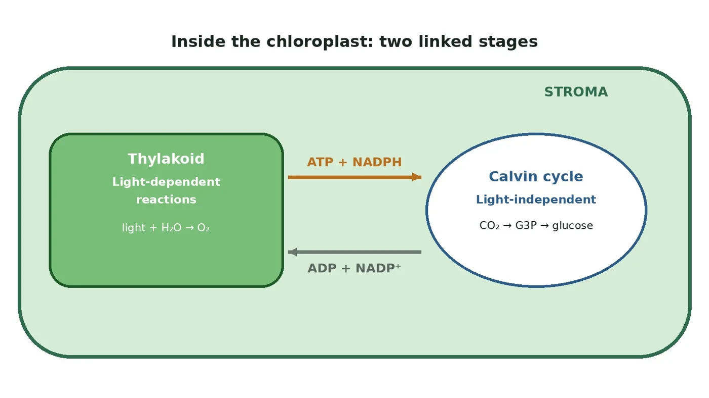
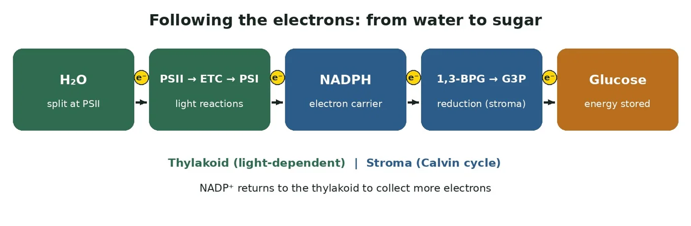
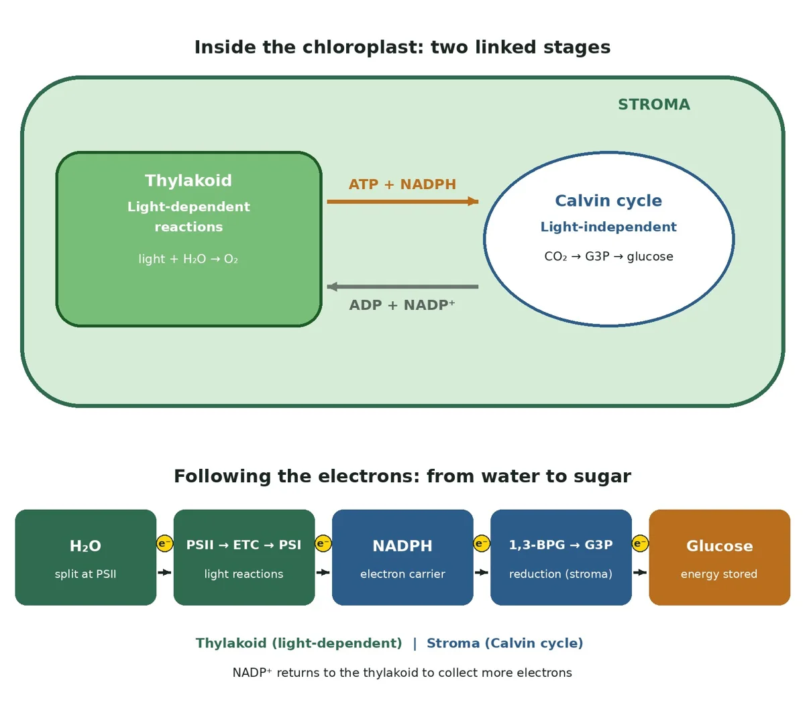
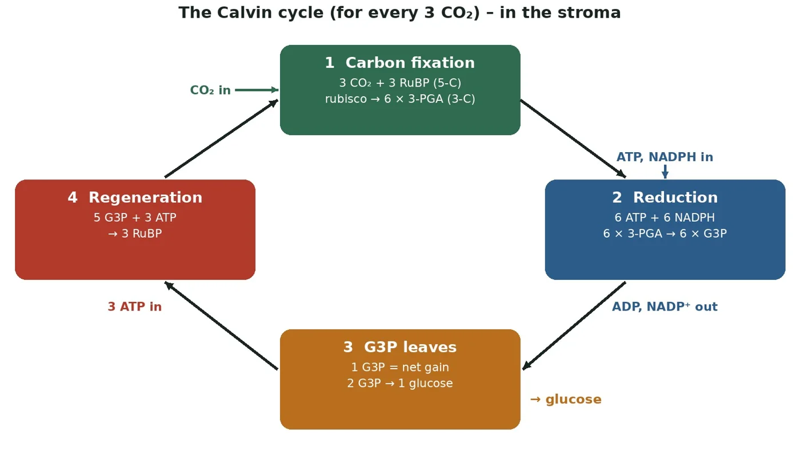
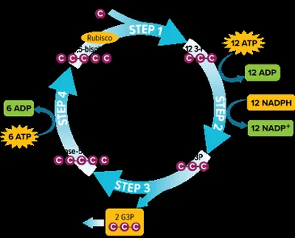
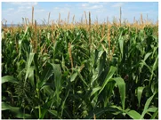
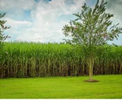
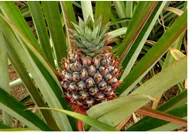
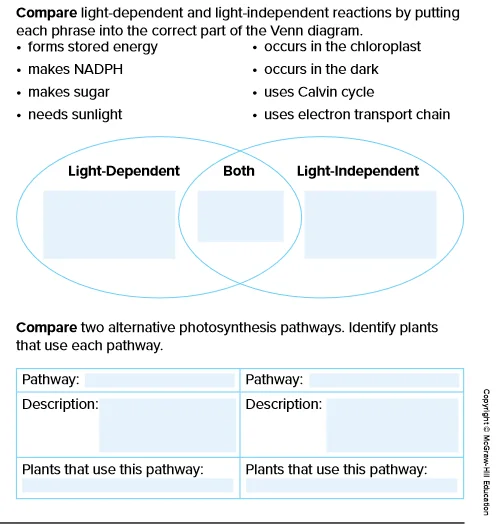

The Calvin Cycle
Photosynthesis · the light-independent reactions
 UAE NATIONAL CHARTER · الميثاق الوطني
UAE NATIONAL CHARTER · الميثاق الوطنيMeet your UAE Values Team
Five friends will coach you through today's sugar-factory mission. Tap a character to discover their job today!
Lesson map · 45 minutes · tap any activity
Objectives, success criteria & key words
Describe the light-independent reactions (Calvin cycle) of photosynthesis.
- Foundation: I can state where the Calvin cycle happens and name its inputs (CO₂, ATP, NADPH) and product (G3P).
- Secure: I can describe the three phases: carbon fixation, reduction and regeneration of RuBP.
- Advanced: I can explain how NADPH's electrons reduce 3-PGA to G3P, and compare the C4 and CAM pathways.
Starter + attendance on the LMS

- Mark your attendance on the LMS and settle in your seat.
- Recap the light reactions: where do they happen, what goes in, and what comes out?
- Look at the diagram: which two molecules travel from the thylakoid to the stroma?
- Then answer the true/false questions on the next slide on your own.
Pre-assessment: what do you already know?

Hook: the ghaf tree's sugar factory

In the desert near Hatta…
A ghaf tree stays green in 45 °C heat. Its leaves have made ATP and NADPH from sunlight, but the tree needs sugar to grow wood, leaves and seeds, and the only carbon around is CO₂ in the air.
The mystery: how does the tree turn invisible CO₂ gas into solid sugar, and where do the electrons from the light reactions end up?
2. What are ATP and NADPH used for?
3. How could a plant save water in hot weather?
Video: the Calvin cycle (narrated, 3 min 4 s, subtitles)
Activity 1: fix, reduce or regenerate?
Which phase does each card describe: FIX, REDUCE or REGENERATE? Tap to choose (tap again to change), then check.

Activity 2: who's who? (the unconventional version)
The Calvin cycle is a LEGO factory with a carousel. Each carousel hook (RuBP, 5 bricks) gets one new brick (CO₂) clipped on by a robot arm (rubisco). Batteries (ATP) and paint (NADPH electrons) finish the pieces (G3P). One finished piece leaves as the product; the rest are rebuilt into new hooks so the carousel keeps turning.
In the Calvin cycle, energy is stored in organic molecules such as glucose. CO₂ is fixed onto RuBP, ATP and NADPH transfer their chemical energy to make G3P, some G3P leaves to make glucose, and the rest regenerates RuBP.
Textbook: phase 1 (carbon fixation) and phase 2 (reduction)

The Calvin cycle: fix, reduce, rebuild
Watch: the Calvin cycle reactions of photosynthesis
Simulation: Calvin cycle counter
Type the number of molecules (and the enzyme) in each box. Follow the arrows round the cycle, then press Check.
in the stroma
Simulation: lights off! What happens in the dark?
The Calvin cycle is called light-independent, but does it really work in the dark? The light reactions make ATP and NADPH, which power the Calvin cycle. Switch the light off, watch what happens to ATP, NADPH, RuBP and 3-PGA, then switch it back on.
Simulation: C3, C4 or CAM? Desert adaptations
C4 plants separate the steps in space: mesophyll cells fix CO₂ into a 4-C molecule, which moves to bundle sheath cells and releases CO₂ for the Calvin cycle. Stomata partly close to conserve water. Maize, grasses, sugarcane.
CAM plants separate the steps in time: stomata open at night, CO₂ is stored as organic acids in vacuoles, and is released into the Calvin cycle in the day. Pineapples, cacti, succulents, jade.




Lab: floating leaf disks · does CO₂ speed up photosynthesis?
- Cup A: water + a drop of soap. Cup B: water + baking soda + a drop of soap.
- Use the syringe to pull the air out of the leaf disks so they sink.
- Put 10 disks in each cup under the lamp.
- Count the floating disks every minute for 5 minutes. Oxygen made by photosynthesis makes them float.
| Cup | Disks floating at 5 min | Explain |
|---|---|---|
| A · no CO₂ | 0 to 1 | no CO₂ to fix, so the Calvin cycle stops |
| B · with CO₂ | most of the 10 | CO₂ is fixed, so photosynthesis keeps going |
| Link | carbon fixation | rubisco |
Formative check
Tap an answer. Wrong? Read the hint and try again!
Put the Calvin cycle in order (for 3 CO₂)
Tap the steps from first to last. Tap a numbered one to undo.
Calvin cycle worksheet (1/2)
B. 5-C sugar that accepts CO₂
C. First stable 3-C product
D. Electron donor in reduction
E. 3-C sugar; one leaves to make glucose
Calvin cycle worksheet (2/2)
| Phrase | Which stage? |
|---|---|
| makes NADPH | |
| makes sugar | |
| occurs in the chloroplast | |
| needs sunlight directly | |
| uses the Calvin cycle | |
| uses an electron transport chain |
Explain why the Calvin cycle soon stops if a plant is kept in the dark.
✓ Without light, the light-dependent reactions stop, so no new ATP and NADPH are made.
✓ Without ATP and NADPH, 3-PGA cannot be reduced to G3P.
✓ RuBP cannot be regenerated, so rubisco has no CO₂ acceptor and the cycle stops.
Differentiated tasks: choose your level
Foundation ★
- State where the Calvin cycle happens, its inputs and its main product.
The stroma of the chloroplast. Inputs: CO₂, ATP and NADPH. Product: G3P, used to make glucose.
Secure ★★
- Describe the three phases for 3 CO₂, including the numbers of ATP and NADPH.
Fix: 3 CO₂ + 3 RuBP → 6 3-PGA. Reduce: 6 ATP + 6 NADPH → 6 G3P (1 leaves). Regenerate: 5 G3P + 3 ATP → 3 RuBP.
Advanced ★★★
- Trace an electron from water to glucose.
- Explain why CAM helps desert plants.
1. H₂O → PSII → ETC → PSI → NADPH → G3P → glucose.
2. CAM opens stomata at night, storing CO₂, so less water is lost in the hot day.

Summative assessment: Calvin Cycle Master quiz
Exit ticket: solve the ghaf tree mystery
In the stroma, RUBISCO fixes CO₂ onto RuBP to make 3-PGA. ATP and NADPH reduce it to G3P, so NADPH's electrons end up in the sugar's bonds. One G3P leaves to build glucose; the rest regenerate RuBP. In the hottest weather, desert plants can save water with C4 or CAM pathways.
Foundation: I can state where the Calvin cycle happens and its inputs and product.
Secure: I can describe fixation, reduction and regeneration.
Advanced: I can explain how NADPH reduces 3-PGA, and compare C4 and CAM.
I can explain why the cycle stops in the dark.
Which value did you show today?
Tap the character whose value you showed in this lesson. Then tell your partner one real example!
Turning air into life
A ghaf tree turns invisible air into strong wood, one carbon at a time. Build your future the same way: one small step, every single day!